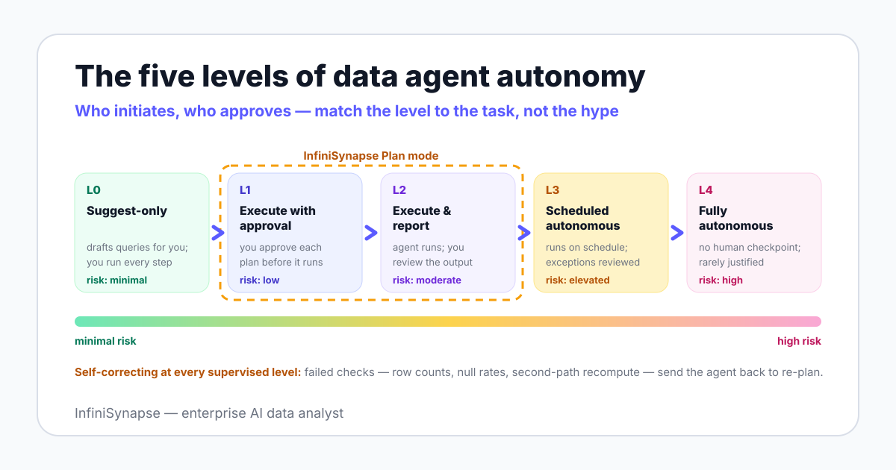

The base concept here is the data agent — a system that plans, executes, verifies, and explains analysis work — defined in full in our guide to what a data agent is. This page covers the dimension vendors describe least honestly: how much the agent does without you.
Anthropic's Building Effective Agents defines agents as LLMs dynamically directing their own processes and tool usage. That definition says nothing about removing humans — direction and supervision are separate axes, which is exactly why a levels model beats a binary.
The question "is your agent autonomous?" produces marketing answers. The question "who initiates, and who approves?" produces an architecture answer — and it splits into five distinct levels.

| Level | Who initiates | Who approves | Where it fits | Risk profile |
|---|---|---|---|---|
| L0 — Suggest-only | You | You, every step | Drafting queries you run yourself; copilot-style assistance | Minimal — errors stop at your review |
| L1 — Execute with approval | You | You, per plan | New question types; first months of any deployment | Low — a bad plan is caught before it runs |
| L2 — Execute and report | You | Agent executes; you review output | Question types with an established track record | Moderate — errors surface at output review |
| L3 — Scheduled autonomous | The agent, on schedule or trigger | Nobody per run; humans review exceptions | Recurring read-only reports and monitoring | Elevated — drift accumulates between reviews |
| L4 — Fully autonomous | The agent | Nobody | Almost nothing in analytics justifies this today | High — no human checkpoint at all |
InfiniSynapse's Plan mode is an L1-L2 design: the agent drafts an analysis plan, you review or adjust it, then it executes and reports with an evidence trail. We built the product around supervised levels because that is where the agentic analytics value sits without the L4 risk profile.
No vendor, including us, should sell you L4 for open-ended business analysis. The levels above L2 are an operations decision you grow into per task — not a product feature you switch on globally.
"Self-correcting data agent" only means something if you can name the checks. The loop is: execute, verify, and on failure return to planning with the failure as new context.
The pattern has a citation, not just a diagram. The ReAct paper (2022) showed that interleaving reasoning and acting reduces error compared with generating an answer in one pass — verification is where the interleaving earns its cost.
After a join, the agent compares result row counts against expectations from the source tables. A cross-source join by phone number that returns 3 rows from two large customer tables is a failed join key, not a finding.
The agent inspects null rates on key columns before aggregating. A revenue column that is 40% null after a join means the join dropped data — averaging over it would produce a confident, wrong number.
For headline numbers, the agent recomputes the metric through a different aggregation path and compares. Two paths that disagree send the agent back to re-plan; two paths that agree become part of the evidence trail you review in explainable AI data analysis.
A self-correcting agent is not one that never fails — it is one whose failures are visible, logged, and sent back to planning instead of into your board deck.
Autonomy is an investment with a payback profile: it pays on tasks that repeat, read rather than write, and have stable definitions. Match the level to the task, not to the vendor's ambition.
| Task | Recommended level | Why |
|---|---|---|
| Recurring reports (weekly revenue, channel summaries) | L3 after an L2 track record | Stable definitions, read-only, and verification catches data drift a cron job would ship silently |
| Monitoring with first-pass diagnosis | L3 | The agent watches thresholds and attaches a draft "what changed" investigation, so humans start from evidence instead of an alert |
| Web data collection (competitor prices, listings) via Browser Use | L2-L3 | Multi-step browser workflows are tedious for humans and low-risk when collection is read-only and logged |
| Cross-source reconciliation (platform data + CSV exports) | L2 | Joins across systems benefit from agent execution, but output review catches key mismatches early |
| Open-ended "why" investigations | L1 | Novel questions need plan review — the plan is where wrong definitions and wrong scopes get caught |
| Artifact production (Excel, Word, PPT deliverables) | L2 | Generation through the Agent Tool Market is cheap to re-run, so review-after beats approve-before |
This section is the one vendor pages omit, so treat it as our disclosure working as intended. Four situations should never run above L1 — and some should not involve an agent at all.
An autonomous run computes "churn" using whichever definition it retrieves. If two teams disagree on that definition, the agent automates the disagreement at schedule frequency — assign a metric owner before granting any autonomy.
Reading data wrong costs a correction; writing data wrong costs an incident. Keep agent credentials read-only, and treat any vendor whose default setup requests write access as a red flag.
Personal data, financial reporting inputs, and health records carry legal obligations the agent does not know it is triggering. The EU AI Act, in force since 2024-08-01 with obligations phasing in through 2026-2027, makes documented human oversight the safe default here.
An autonomous result you cannot reconstruct is a liability with a timestamp. The NIST AI Risk Management Framework (2023) frames this as the measure and manage functions: if you cannot measure what the agent did, you cannot manage it.
Use this table in vendor evaluations and in your own deployment reviews. A "no" in the third column means the task stays at a lower level — there are no exceptions that age well.
| Guardrail | Question to ask | What good looks like |
|---|---|---|
| 1. Credentials | What can the agent's account actually do? | Read-only by default, scoped per source, separate from human accounts |
| 2. Plan review | Can a human see and edit the plan before new question types run? | Explicit plan-approval mode; no silent execution paths |
| 3. Evidence trail | Can a reviewer reconstruct any result? | Plan, queries, sources, and checks attached to every output |
| 4. Scope limits | Which sources and operations are off-limits? | Explicit allowlist of sources; write operations excluded |
| 5. Escalation | What happens when a verification check fails repeatedly? | Defined handoff to a named human, not infinite retries |
| 6. Logging | Is every agent action recorded? | Complete, tamper-evident logs your security team can query |
| 7. Kill switch | How fast can you stop all standing tasks? | One revocation action stops execution; tested, not assumed |
| 8. Periodic review | Who re-checks standing autonomous tasks, and when? | Scheduled human review of outputs and definitions, at least quarterly |
If your organization needs a formal wrapper around these controls, ISO/IEC 42001:2023 defines an AI management system standard that auditors recognize. The checklist above maps cleanly into it.
The economic case for autonomy is not removing the analyst — it is moving the analyst from production to review. Producing a recurring analysis manually takes hours; reviewing an agent's evidence trail for the same analysis takes minutes.
That shift changes the job rather than deleting it: the human owns definitions, reviews exceptions, and handles the judgment calls the agent escalates. What the role looks like day to day is covered in our AI data analyst guide.
Memory is what makes the review burden shrink instead of repeat. When a reviewer corrects a definition once and the correction persists to every future run, error classes get retired rather than re-caught — the mechanism behind that is the subject of data agent memory explained.
If you want full L4 autonomy with no human checkpoints, we are the wrong vendor — Plan mode exists because we think that request is a mistake. Teams without connected sources, metric owners, or anyone available to review exceptions should also fix those foundations before piloting any agent, ours included.
Connect a source read-only, run one recurring analysis through Plan mode, and inspect what the verification checks caught. The evidence trail from a single supervised run tells you which autonomy level the task actually deserves.
Try InfiniSynapse onlineLast updated: 2026-06-12 · Next scheduled review: 2026-09-12
The autonomy levels and self-correction checks are grounded in published agent research (ReAct, the 2025 data agent surveys), the BIRD benchmark, and governance frameworks (NIST AI RMF, ISO/IEC 42001, the EU AI Act). Capabilities attributed to InfiniSynapse — Plan mode, verification checks, Browser Use, the Agent Tool Market — come from InfiniSynapse product documentation, not independent benchmarks.
Conflict of interest: InfiniSynapse publishes this guide and sells a product that operates at the supervised levels this page recommends. To reduce bias, the page names the levels we do not serve, the situations where no agent belongs, and a guardrail checklist you can use against us.
Update cadence: Reviewed every 90 days for terminology, source links, regulatory dates, and schema consistency.